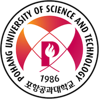

Lizhuang Tan (谭立状)
Lizhuang Tan (谭立状)ByteTuning is accepted by IEEE Transacitons on Cloud Computing.
A project on Buffer Management of Data Center Networking was funded by the National Natural Science Foundation of China.
I have been selected for the Korea-China Young Scientists Exchange Program and will be conducting network management research at POSTECH.
A project on In-band Network Telemetry was funded by the Natural Science Foundation of Shandong.
A project on FPGA-based offloading in data centers was funded by the Natural Science Foundation of Shandong and Inspur Inc.
Got the PhD from Beijing Jiaotong University. Thanks to my mentor, Prof. Wei Su.